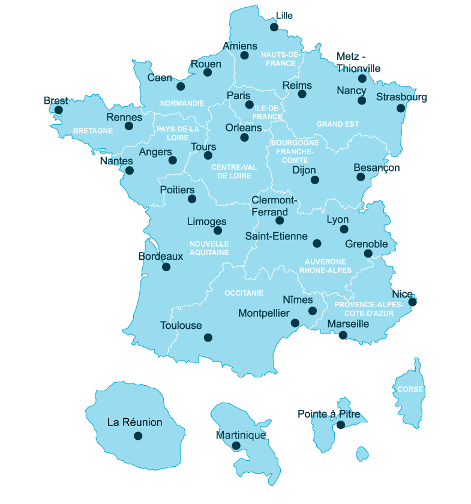

Mon orientation
Mode nuit
Bonjour je m'appelle Nour Aldin Alrabbat et je suis en seconde au lycée Jay De Beaufort.
Cette année je dois choisir 3 spécialités pour l'année prochaine et j'aimerai choisir les spécialités suivantes:
- Maths
- SVT
- Physique Chimie
Plus tard j'aimerais être médecin donc ces spécialités sont les meilleures choix pour rejoindre la fac de médecine.
La médecine
Les études de médecine prennent 9 ans pour les médecine généraliste et 10 à 12 ans si on souhaite prendre une specialité.

Il y a plusieur fac de médecine en france comme on peut le voir sur la carte :
**************************

**************************